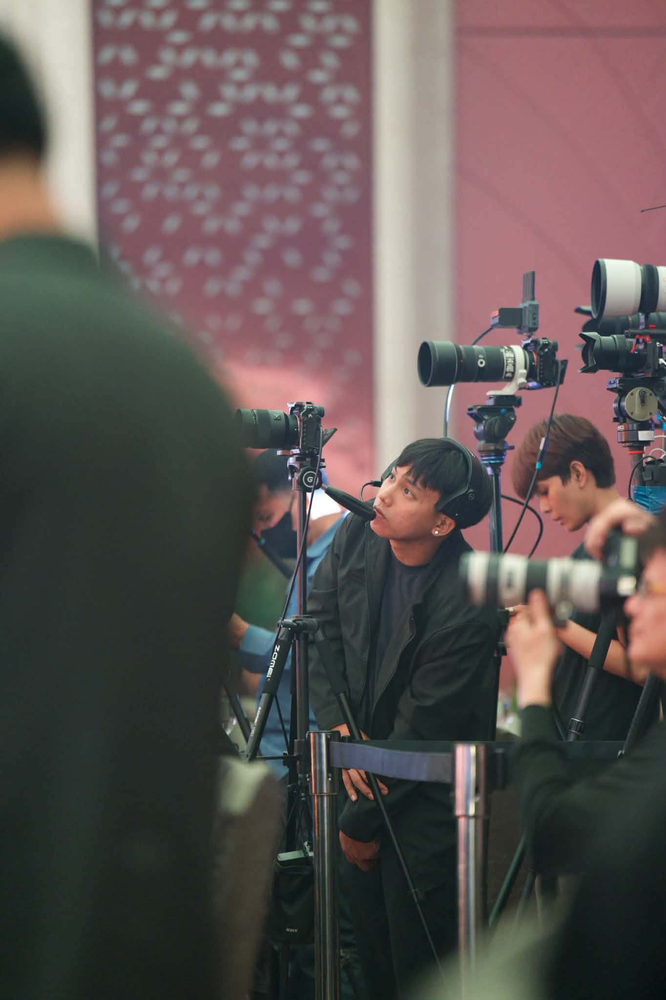
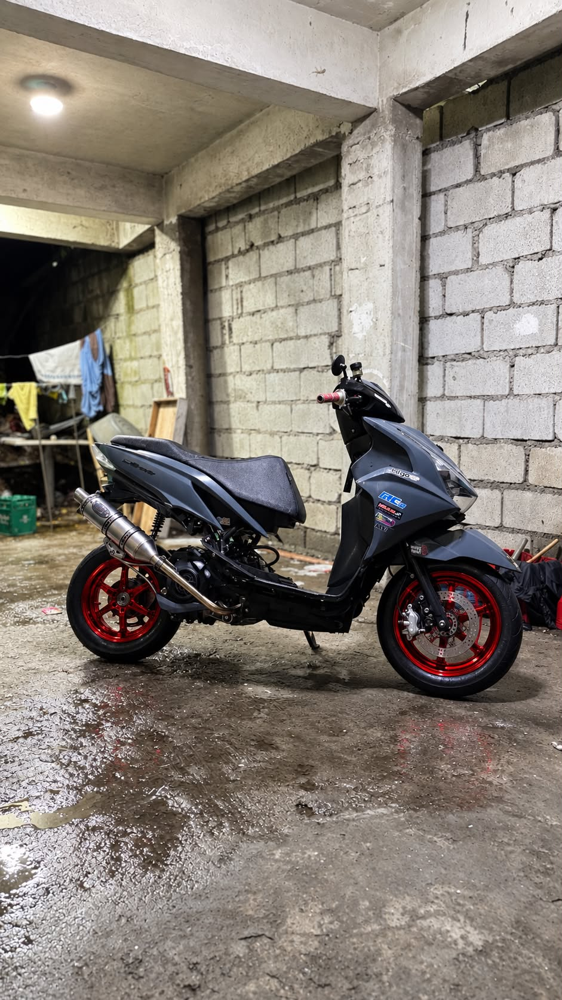
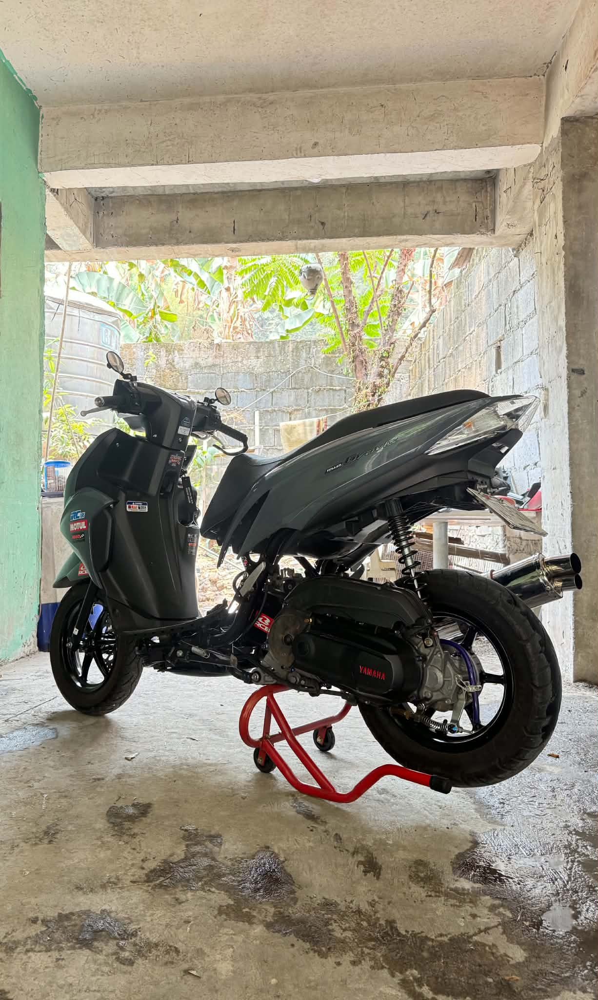

01 / BEHIND THE LENS
Photography & Filmmaking
Freelance work with Jamin Lim Photography
ANJHO TUVILLA PRESENTS
Engineering ideas. Capturing stories.
Living life in the fast lane.
WHO I AM
I'm Anjho Tuvilla, known as AJ77 — a fourth-year Computer Engineering student at ICCT Colleges with a passion for technology, visual storytelling, and motorcycle culture.
Outside the classroom, I freelance as a photographer and videographer for Jamin Lim Photography. I enjoy turning moments into visuals, exploring creative ideas, and learning through hands-on experiences.
I'm also a motorcycle enthusiast and the founder of GRAVIS GP — driven by the culture of building, riding, and pushing creative limits.
LET'S CONNECT ↗Different disciplines. One creative drive. Always learning, always improving.
Progress bars are visual design elements, not formal skill ratings.
A mix of visual storytelling, motorcycle culture, and engineering curiosity.

Freelance work with Jamin Lim Photography

Founder · Build culture · Community

Motorcycle interest and hands-on learning
MOTORCYCLE ENTHUSIAST
Motorcycles bring together engineering, craftsmanship, community, and the thrill of the road. I enjoy the details behind every build and the stories made along the way.
FOLLOW MY JOURNEY ↗Founded with a love for motorcycle culture, creative builds, and the racing spirit.
EST. BY AJ77A few frames from the things I enjoy capturing and creating.
PERSONAL SOUNDTRACK
Original neon-racing instrumental, composed for this portfolio. A custom soundtrack with no commercial song samples.